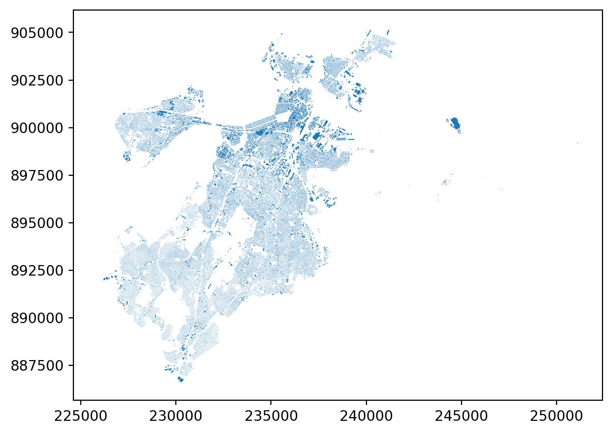

PATH_DATA_BOSTON = "/Users/legariapena.j/Library/CloudStorage/GoogleDrive-legariapena.j@husky.neu.edu/Shared drives/Drawing Participation/Million Neighborhoods/Spatial Data/ma-bos-buildings/structures_poly_35.shp"
PATH_DATA_CHARLOTTE = "/Users/legariapena.j/Library/CloudStorage/GoogleDrive-legariapena.j@husky.neu.edu/Shared drives/Drawing Participation/Million Neighborhoods/Spatial Data/nc-charlotte-buildings/buildings_with_parcels_Charlotte-NC.geojson"
PATH_DATA_PITTSBURGH = "/Users/legariapena.j/Library/CloudStorage/GoogleDrive-legariapena.j@husky.neu.edu/Shared drives/Drawing Participation/Million Neighborhoods/Spatial Data/pa-pittsburgh-buildings/AlleghenyCounty_Footprints.geojson"
PATH_DATA_MANHATTAN = "/Users/legariapena.j/Library/CloudStorage/GoogleDrive-legariapena.j@husky.neu.edu/Shared drives/Drawing Participation/Million Neighborhoods/Spatial Data/ny-manhattan-buildings/geo_export_a80ea1a2-e8e0-4ffd-862c-1199433ac303.shp"
import os
import geopandas as gpd
import pyogrio
# Without this, GDAL fails on the Pittsburgh GeoJSON ("Unterminated object")
pyogrio.set_gdal_config_options({"OGR_GEOJSON_MAX_OBJ_SIZE": "0"})
gdf_charlotte = gpd.read_file(PATH_DATA_CHARLOTTE)
gdf_boston = gpd.read_file(PATH_DATA_BOSTON)
gdf_pittsburgh = gpd.read_file(PATH_DATA_PITTSBURGH)
gdf_manhattan = gpd.read_file(PATH_DATA_MANHATTAN)
gdf_boston.plot()
convex_hull_geometry = gdf_boston["geometry"].convex_hull
import osmnx as ox
def download_street_network_from_gdf(
gdf:gpd.GeoDataFrame,
save_path:str,
):
print(f"Gathering street network for {save_path}")
if not os.path.exists(save_path):
gdf_copy = gdf.copy()
gdf_copy = gdf_copy.to_crs(4326)
single_hull = gdf_copy.union_all().convex_hull
street_network = ox.graph_from_polygon(single_hull, network_type = "drive")
street_network_gdf = ox.graph_to_gdfs(street_network, nodes = False)
street_network_gdf.to_file(save_path)
#Download the street networks before getting the blocks
from pathlib import Path
PARENT_PATH = "/Users/legariapena.j/Documents/Parcel_project/data"
download_street_network_from_gdf(gdf_boston, Path(PARENT_PATH) / "boston_streets.gpkg")
download_street_network_from_gdf(gdf_charlotte, Path(PARENT_PATH) / "charlotte_streets.gpkg")
download_street_network_from_gdf(gdf_pittsburgh, Path(PARENT_PATH) / "pittsburgh_streets.gpkg")
download_street_network_from_gdf(gdf_manhattan, Path(PARENT_PATH) / "manhattan_streets.gpkg")Gathering street network for /Users/legariapena.j/Documents/Parcel_project/data/boston_streets.gpkg
Gathering street network for /Users/legariapena.j/Documents/Parcel_project/data/charlotte_streets.gpkg
Gathering street network for /Users/legariapena.j/Documents/Parcel_project/data/pittsburgh_streets.gpkg
Gathering street network for /Users/legariapena.j/Documents/Parcel_project/data/manhattan_streets.gpkg